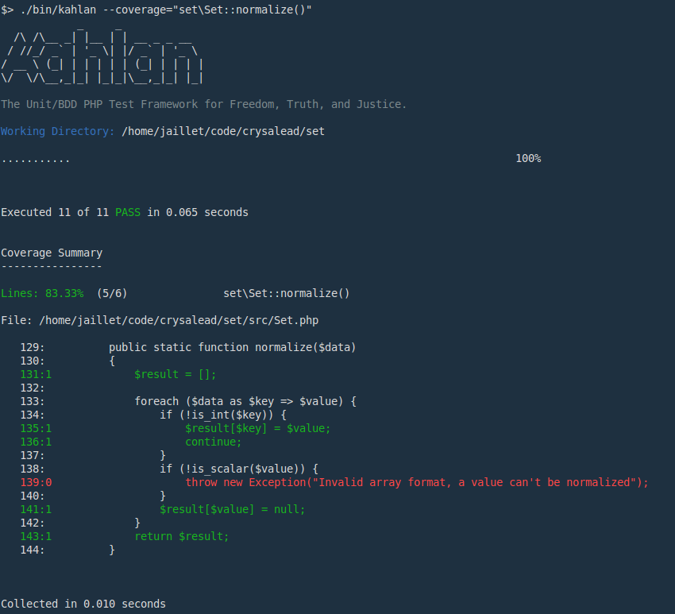

Pro Tips
Use the --ff option (fast fail)
--ff is the fast fail option. If used, the test suite will be stopped as soon as a failing test occurs. You can also specify a number of "allowed" fails before stopping the process. For example:
./bin/kahlan --ff=3will stop the process as soon as 3 specs it failed.
Use --coverage option
Kahlan has some built-in code coverage exporter (e.g. Coveralls & Scrutinizer exporters) but it can also be used to generates some detailed code coverage report directly inside the console.
--coverage=<integer> will generates some code coverage summary depending on the passed integer.
- 0: no coverage
- 1: code coverage summary of the whole project
- 2: code coverage summary detailed by namespaces
- 3: code coverage summary detailed by classes
- 4: code coverage summary detailed by methods
However sometimes it's interesting to see in details all covered/uncovered lines. To achieve this, you can pass a string to the --coverage option.
--coverage=<string> will generates some detailed code coverage according to the specified namespace, class or method definition.
Example:
./bin/kahlan --coverage="Kahlan\Reporter\Coverage\Driver\Xdebug::stop()" don't forget to correctly set the
don't forget to correctly set the --src option if your source directory is not src/.
Will give you the detailed code coverage of the Xdebug::stop() method.

Note:
All available namespaces, classes or methods definitions can be extracted from a simple --coverage=4 code coverage summary.
Note: You can use PHPDBG code coverage capabilities to generate code coverage report through the following command line:
phpdbg -qrr ./bin/kahlan --coverageWarning: while 80% faster than Xdebug it's currently not as accurate as Xdebug and more prone to Fatal Errors.
--istanbul=<file>
You can also create an HTML Code Coverage report using istanbul like so:
npm install -g istanbul
./bin/kahlan --istanbul="coverage.json"
istanbul reportYou'll find the HTML Code Coverage report in coverage/lcov-report/index.html.
--lcov=<file>
You can also use genhtml (from the lcov package):
sudo apt-get install lcov
mkdir lcov
./bin/kahlan --lcov="lcov/coverage.info"
cd lcov
genhtml coverage.infoInjecting variables at root scope
To inject some variables to all scopes (e.g. database connection, helpers, etc.) and make it available in all you specs, one solution is to configure you kahlan-config.php file like the following:
Filters::apply($this, 'run', function($next) {
$scope = $this->suite()->root()->scope(); // The top most describe scope.
$scope->global = 'MyVariable';
return $next();
});Then you can get it in any scopes like in the following:
describe("My Spec", function() {
it("echoes the global", function() {
echo $this->global;
});
});Use the focused mode
When writing your tests sometimes you want to only execute the test(s) you are working on. For this, you can prefix your spec with an "f" like in the following example:
describe("test focused mode", function() {
it("will be ignored", function() {
});
it("will be ignored", function() {
});
fit("will be run", function() {
});
});If you want to run a subset instead of a single test you can use fdescribe or fcontext instead.
Tip: combined with --coverage=<string> this is a powerful combo to see exactly what part of the code is covered for a subset of specs only.
Comment out a spec
To comment out a spec, you can use the x prefix i.e. xdescribe, xcontext or xit.
Skip a spec
To skip a spec you should use a skipIf() function inside of it. This function takes a boolean, that mean you can provide a conditions to skip this spec up. In example:
it("should not run on weekends", function() {
skipIf(date("w") == 0 || date("w") == 6);
expect(true)->toBe(true);
});